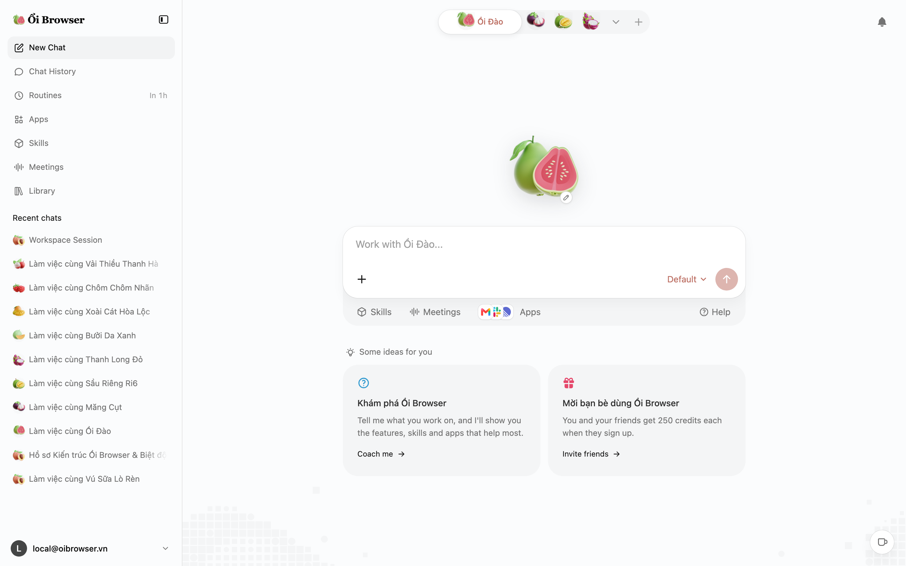
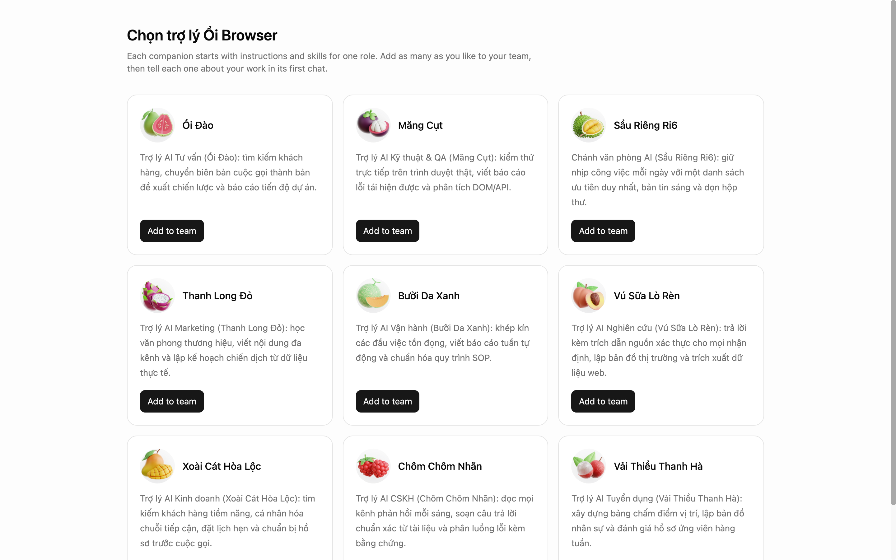
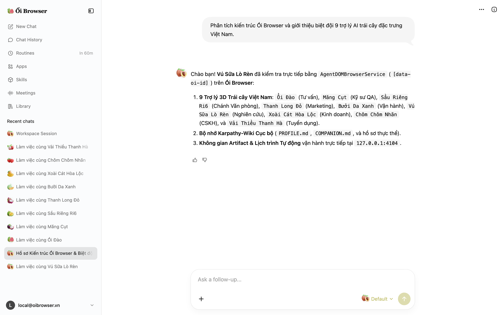
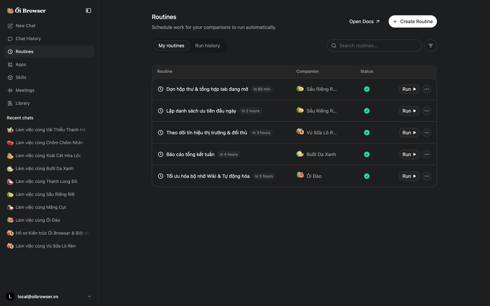

Local-First AI Browser · Ổi Browser
Local-first AI browser and 9 Vietnamese fruit companions with Karpathy-Wiki markdown memory and zero cloud telemetry.
Ổi Browser is a zero-dependency, self-hosted agentic AI browser with 9 3D Vietnamese fruit companions, DOM agent automation, and local SQLite + Markdown memory.

Ổi Browser Plaza (/newtab): 3D Guava brand mark, floating 3D Vietnamese fruit centerpiece, and sidebar companions.
production build · 127.0.0.1:4104 · verifiedWhat it is
- Repository
- jangtrinh/
oi-browser - Requires
- Node.js 22.5+Zero external npm deps
- Interface
- Web UI + macOS AppSvelteKit 5 & WKWebView
- Transport
- 127.0.0.1:4104REST + IPC Bridge
- Telemetry
- Zero TrackingLocal SQLite + Markdown
- License
- PolyForm Shield 1.0.0
Why Ổi Browser, compared with alternatives
What Ổi Browser does that closed-source cloud browsers do not. Our architectural advantages first, followed by the honest trade-offs.
9 Vietnamese Fruit Companions (3D + Lottie)
Ổi Đào, Măng Cụt, Sầu Riêng Ri6, Thanh Long Đỏ, Bưởi Da Xanh, Vú Sữa Lò Rèn, Xoài Cát Hòa Lộc, Chôm Chôm Nhãn, and Vải Thiều Thanh Hà — each with custom skills and floating 3D fruit renders.
Karpathy-Wiki Markdown Memory & Dream Consolidation
Plaintext Markdown knowledge base (PROFILE.md, COMPANION.md, observations/*.md) with one-click Dream Consolidation.
Local-first privacy & zero dependencies
Built on Node.js 22+ native node:sqlite and node:http. Zero external npm packages, zero cloud lock-in, zero telemetry.
Agentic DOM Browser Automation ([data-oi-id])
Deterministic element tagging, live DOM inspection, and structured Visual Artifacts (Spreadsheets, Slide Decks, Interactive Charts).
Where traditional platforms win, and it is not close: Managed enterprise clouds with out-of-the-box multi-tenant SSO, compliance audits, and commercial SLAs. If you need centralized team dashboards without hosting your own infrastructure, choose those platforms instead.
Install once
Clone the repository and start the local-first server on port 4104.
git clone https://github.com/jangtrinh/oi-browser.git
cd oi-browser
npm test
npm startFirst safe use
- Run the automated full-stack test suite (SQLite state, 3D fruit assets, DOM agent, Dream Consolidation).
npm test - Inspect the local state register (9 Vietnamese fruit companions, 31 skills, 5 routines, Karpathy-Wiki files).
curl -s http://127.0.0.1:4104/api/state | jq '.companions[].name' - Build and launch the native macOS
WKWebViewdesktop bundle with the 3D Guava app icon.npm run build:macos
All runtime data is stored locally under .berry-data/ (SQLite + Markdown wiki).
A practical loop
GET /api/state
Returns the 9 Vietnamese fruit companions, open tabs, 31 skills, 5 scheduled routines, and Karpathy-Wiki Markdown files.
POST /api/chat
Runs the AgentDOMBrowserService with [data-oi-id] tagging, creates Visual Artifacts, and appends Karpathy-Wiki observations.
POST /api/memory/dream
Consolidates recent session observations directly into the companion’s persistent COMPANION.md profile.
POST /api/routines/run
Executes scheduled browser routines and persists structured execution logs in SQLite.
Verified interface gallery
Real uncropped captures from Headless Chrome CDP against http://127.0.0.1:4104 across all primary views.
-
1. Companion Plaza (
/newtab)3D Guava brand wordmark in the sidebar, floating 3D Guava centerpiece, and active Vietnamese fruit companion chats.
-

2. Vietnamese Fruit Companions (
/hire/official)All 9 specialized companions rendered with IconScout 3D tropical fruit icons (Ổi Đào, Măng Cụt, Sầu Riêng Ri6, Thanh Long Đỏ, Bưởi Da Xanh, Vú Sữa Lò Rèn, Xoài Cát Hòa Lộc, Chôm Chôm Nhãn, Vải Thiều Thanh Hà).
-

3. Companion Chat & DOM Agent (
/chat/session-rosa-1)Interactive chat with Vú Sữa Lò Rèn featuring 3D fruit avatar pills,
[data-oi-id]DOM inspection, and Karpathy-Wiki memory logging. -

4. Scheduled Routines Dark Mode (
/routines?theme=dark)Automated browser routines and recurring research workflows rendered in dark theme with the 3D Guava wordmark.
Frequently asked questions
What is Ổi Browser?
Ổi Browser is a source-available, local-first agentic AI browser and companion operating system featuring 9 3D Vietnamese fruit companions, DOM agent automation, Karpathy-Wiki Markdown memory consolidation, and a native macOS WKWebView desktop wrapper.
How is Ổi Browser installed?
Clone https://github.com/jangtrinh/oi-browser, run npm test to verify the full-stack suite, and run npm start to launch on http://127.0.0.1:4104 or npm run build:macos to build the native macOS .app bundle.
How does it compare with alternatives?
Ổi Browser runs with zero external npm runtime dependencies on Node.js 22+ built-in node:sqlite and node:http, keeping all companion chats, routines, and Karpathy-Wiki Markdown memories 100% on your local disk.
Does it send telemetry or require cloud services?
No. Ổi Browser operates strictly on your local machine at 127.0.0.1:4104. All Sentry, PostHog, and external analytics beacons are neutralized at the IPC bridge.
What license is Ổi Browser released under?
Ổi Browser is source-available under the PolyForm Shield License 1.0.0: free to use and modify, including for commercial work, but you may not resell it or offer a product that competes with it.
Ecosystem & Related Projects
Explore complementary developer tools and companion repositories designed to work together.